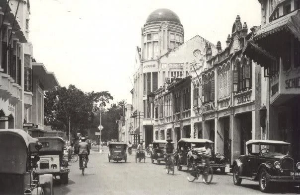
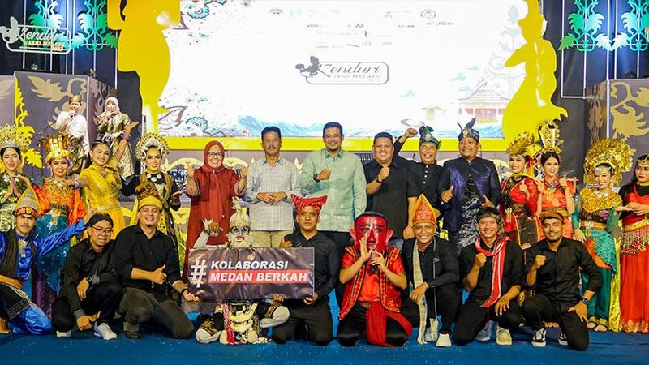
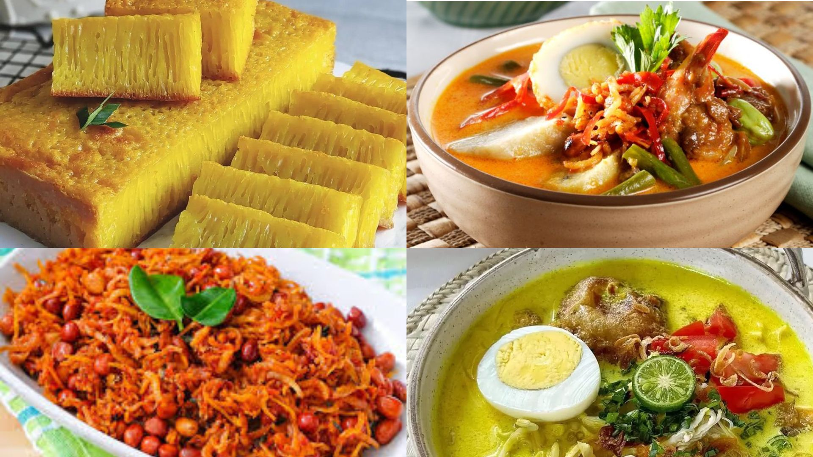
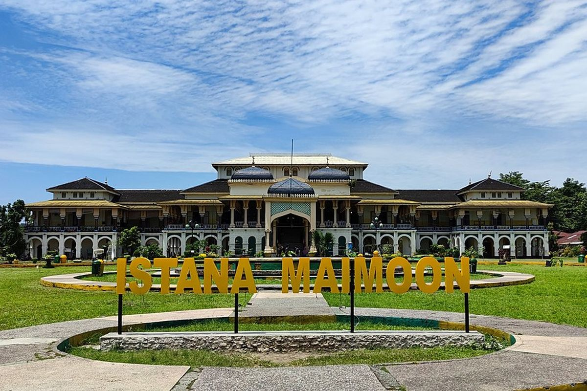
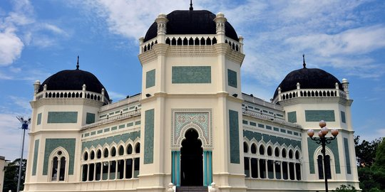
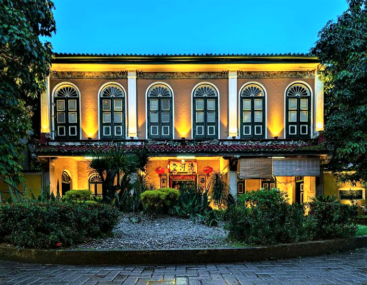
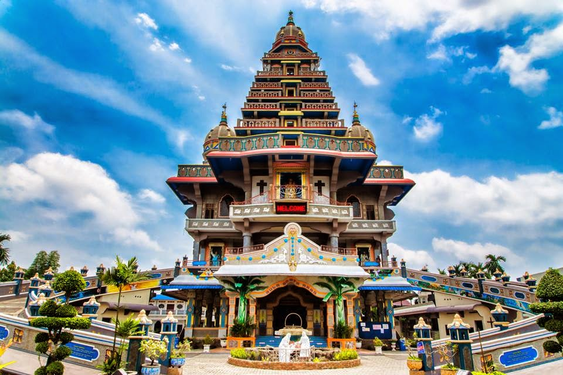
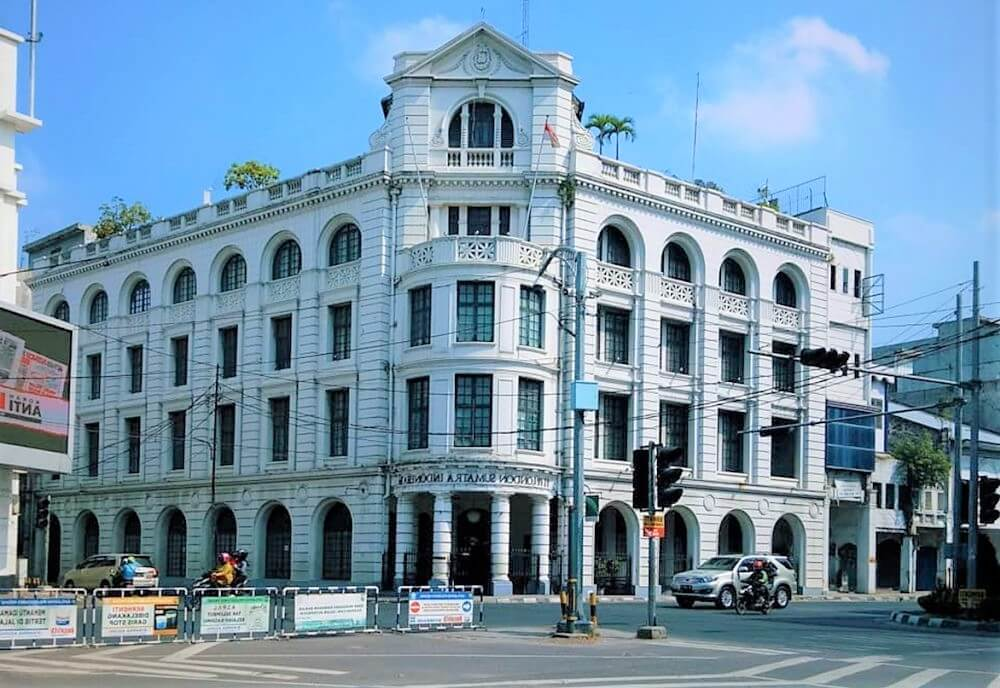

Sejarah

Medan berawal dari sebuah perkampungan kecil bernama Medan Putri yang didirikan oleh Guru Patimpus Sembiring Pelawi
pada tahun 1590 di pertemuan Sungai Deli dan Babura. Nama "Medan" sendiri diyakini berasal dari bahasa Karo
yang berarti lapangan luas. Perkembangan signifikan terjadi pada paruh kedua abad ke-19 dengan
kedatangan perusahaan perkebunan Belanda yang membuka lahan tembakau Deli. Kualitas tembakau yang
mendunia menjadikan Medan sebagai pusat perdagangan dan administrasi perkebunan, menarik gelombang imigran
dari berbagai etnis seperti Tiongkok, India, dan Jawa, yang kemudian membentuk karakter multikultural kota ini.
Di bawah kekuasaan kolonial Belanda, Medan bertransformasi menjadi kota modern dengan pembangunan infrastruktur seperti jalan,
rel kereta api, pelabuhan Belawan, dan gedung-gedung bergaya Eropa. Pada tahun 1886, Medan resmi menjadi ibu kota Keresidenan Sumatera Timur,
mengukuhkan posisinya sebagai pusat penting di wilayah tersebut. Setelah kemerdekaan Indonesia, Medan terus berkembang menjadi kota metropolitan yang ramai,
pusat ekonomi, pendidikan, dan budaya di Sumatera Utara, dengan tetap mempertahankan jejak-jejak sejarahnya dalam arsitektur dan keberagaman masyarakatnya.
Budaya dan Tradisi

Medan merupakan kota yang kaya akan keragaman budaya. Di kota ini,
hidup berdampingan berbagai suku bangsa seperti Batak, Melayu, Tionghoa, India, dan Jawa.
Setiap suku membawa tradisi unik masing-masing, mulai dari bahasa, pakaian adat, hingga tarian tradisional.
Misalnya, Suku Batak dikenal dengan tarian Tor-Tor dan alat musik Gondang, sementara Suku
Melayu menonjolkan seni tari Zapin dan tradisi berpantun. Beragamnya budaya ini membuat
Medan memiliki kekayaan seni yang begitu berwarna dan menarik untuk dipelajari.
Selain itu, perayaan tradisional di Medan juga sangat hidup dan penuh semangat.
Acara-acara seperti Pesta Masyarakat Melayu, Tahun Baru Imlek, dan Festival Deepavali dirayakan dengan meriah,
menampilkan berbagai atraksi budaya yang indah. Tidak hanya itu, nilai-nilai kebersamaan dan saling menghormati
antar etnis sangat terasa dalam kehidupan sehari-hari masyarakat Medan, menjadikan kota ini contoh harmonisasi budaya di Indonesia.
Kuliner Khas

Medan dikenal sebagai surga kuliner di Indonesia karena keanekaragaman makanannya yang menggugah selera.
Salah satu kuliner khas yang sangat terkenal adalah Bika Ambon, kue bertekstur kenyal dengan aroma pandan yang khas.
Selain itu, ada juga Lontong Medan, hidangan lontong dengan sayur santan, sambal teri, telur balado, dan aneka lauk pelengkap lainnya.
Rasanya gurih, pedas, dan sangat menggoda. Soto Medan juga menjadi favorit, dengan kuah santan yang kaya rempah dan potongan daging ayam atau sapi yang empuk.
Tak hanya itu, Medan juga memiliki berbagai camilan lezat seperti risoles, lemang, hingga kue lupis yang banyak dijajakan di pasar-pasar tradisional.
Bagi pecinta seafood, ikan bakar Belawan adalah pilihan tepat, menawarkan cita rasa laut yang segar dengan bumbu khas Medan.
Kuliner Medan tidak hanya kaya rasa, tetapi juga mencerminkan keberagaman budaya yang ada di kota ini.
Wisata
Kota Medan, sebagai ibu kota Provinsi Sumatera Utara, menawarkan beragam destinasi wisata yang kaya akan nilai sejarah, budaya, dan arsitektur.
Multikulturalisme yang kuat di Medan membuat kota ini memiliki berbagai tempat menarik yang menggambarkan keberagaman tersebut.
Dari bangunan bersejarah hingga tempat religi yang unik, Medan menjadi salah satu destinasi wisata favorit di Indonesia.
Istana Maimun

Istana Maimun adalah ikon utama Kota Medan yang dibangun pada tahun 1888 oleh Sultan Ma'mun Al Rasyid Perkasa Alamsyah.
Istana ini menjadi simbol kejayaan Kesultanan Deli dan menampilkan perpaduan arsitektur bergaya Melayu, Islam, Spanyol, India, dan Italia.
Interiornya dihiasi dengan perabotan antik, kain-kain bermotif khas Melayu, serta ornamen bergaya Eropa.
Pengunjung dapat menjelajahi bagian dalam istana, berfoto dengan kostum tradisional Melayu, dan belajar tentang sejarah panjang Kesultanan Deli.
Keindahan arsitektur dan nilai sejarah yang tinggi membuat Istana Maimun menjadi destinasi wajib di Medan.
Masjid Raya Al-Mashun

Masjid Raya Al-Mashun, lebih dikenal dengan sebutan Masjid Raya Medan, dibangun pada tahun 1906 dan menjadi salah satu masjid tertua di Indonesia.
Masjid ini memiliki arsitektur megah yang memadukan gaya Timur Tengah, India, dan Spanyol, dengan kubah besar berwarna hitam dan detail ornamen yang menawan.
Keunikan desain masjid ini menjadikannya tidak hanya sebagai tempat ibadah, tetapi juga destinasi wisata religi dan sejarah.
Lokasinya yang strategis di tengah kota membuat Masjid Raya mudah diakses oleh wisatawan yang ingin menikmati keindahan dan ketenangan spiritualnya.
Tjong A Fie Mansion

Tjong A Fie Mansion adalah rumah megah milik Tjong A Fie, seorang pengusaha kaya keturunan Tionghoa yang berperan penting dalam perkembangan ekonomi Medan di awal abad ke-20.
Bangunan bersejarah ini didirikan pada tahun 1900 dan kini berfungsi sebagai museum yang terbuka untuk umum.
Rumah ini menggabungkan unsur arsitektur Tionghoa, Melayu, dan Eropa, mencerminkan latar belakang multikultural Medan.
Di dalam mansion, pengunjung dapat melihat berbagai koleksi barang antik, foto-foto bersejarah, dan perabotan asli keluarga Tjong A Fie.
Tempat ini menjadi saksi bisu kejayaan masa lalu dan memperkenalkan nilai-nilai toleransi serta kerja sama lintas budaya.
Graha Maria Annai Velangkanni

Graha Maria Annai Velangkanni adalah gereja Katolik unik di Medan yang dibangun pada tahun 2001 dan diresmikan pada tahun 2005.
Gereja ini didedikasikan untuk Bunda Maria Velangkanni yang berasal dari India Selatan.
Keunikan Graha Maria terletak pada arsitekturnya yang menyerupai kuil Hindu dengan warna-warni cerah, menara tinggi, dan ukiran khas India.
Selain menjadi tempat ibadah, Graha Maria juga menjadi destinasi wisata rohani yang menarik pengunjung dari berbagai latar belakang keagamaan.
Ketentraman suasana dan keindahan arsitektur membuat tempat ini sering dijadikan lokasi untuk berdoa, berziarah, atau sekadar menikmati keindahan bangunan.
Gedung London Sumatera

Gedung London Sumatera, sering disingkat Lonsum, merupakan salah satu bangunan kolonial tertua di Kota Medan yang berdiri sejak tahun 1906.
Gedung ini awalnya dibangun sebagai kantor perusahaan perkebunan Belanda dan Inggris yang mengelola perkebunan di Sumatera.
Dengan lima lantai, gedung ini menjadi pencakar langit pertama di Medan pada zamannya.
Arsitektur Eropa klasik yang kokoh masih terjaga hingga kini, membuatnya menjadi landmark ikonik di kawasan Kesawan.
Gedung ini kini difungsikan sebagai kantor swasta, tetapi tetap menjadi objek foto favorit bagi wisatawan yang menyukai sejarah kolonial.